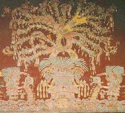

|
 |
Notes on the Present Status of Ololiuhqui and the Other Hallucinogens
of Mexico
R. GORDON WASSON
|
from Botanical Museum Leaflets, Harvard University,
Vol. 20, No. 6,
Nov. 22, 1963, pp. 161-212.
Picietl
| Peyotl
| Teonanacatl
Pipiltzintzintli
| Ololiuhqui
| Tlitliltzen
| Among the remote monolingual peoples of Mexico these plants continue
to this day playing their divine role. Whenever the Indian family is
troubled by a grave problem, it is likely to turn to one or the other of
these plants and consult it according to the usage prevailing in the
region. There were other drugs, certainly, that belong to the same class,
and of these more will be said later. But if we may rely on the number and
quality of the witnesses, the importance that they attribute to these
plants, and the strangely moving episodes that they tell us of the
Indians' utter faith in and defense of them--then these four were
pre-eminent.
The civilization of Europe had known nothing like these novel drugs of Mexico, at least not in recorded history. Similar miraculous powers were attributed, in a way, to the Elements in the Mass; and the Catholic Church in Mexico was quick to perceive this, to it, alarming parallel. But belief in the divinity of the Sacrament called for an act of faith, whereas the Mexican plants spoke for themselves. In a number of situations the record is clear: the friars conceded the miracles wrought by these agents, but attributed them to the machinations of the Evil One. Root and branch, the Church strove to extirpate what is called this superstition, this idolatry of the miracle-working plants. The Church was unsuccessful; just how unsuccessful can be seen from the fact that these plants are taken today, throughout the Indian country, in ceremonials invoking the very name of the Virgin Mary, of the Saints (especially St. Peter and St. Paul), of Our Lord. The accessories to the rite are sold in every market place, at a special stall, often in the shadow of the parish church. The miracle-working plants pass from hand to hand by private arrangement; they are never exposed like ordinary garden produce. The rite takes place in midnight vigils, sometimes accompanied by stirring age-old chants in the vernacular. The Indians attending these rites may include prominent lay officials of the church; rumor has it that in certain places the priest is the leading curandero. Let it not be forgotten that the primary use of the sacred plants was and continues to be religious--and by the same token medicinal. Religion and medicine have not yet been separated out in many of the Indian communities. Picietl -- Nicotiana rustica L. The bright green powder of picietl leaves is familiar all over the Indian country in Mexico. The curandero rubs it on the skin, over the forearms, temples, stomach, legs. It is this that constitutes a limpia or ritual cleansing. Formerly, when mixed with one part of lime to ten of picietl, it was made into a wad that the Indian inserted between teeth and gums and sucked, much as the Quechua sucks coca, to give him strength. The friars inveighed against picietl with a vehemence that is proof of its importance in the native culture. It is still indispensable in the religious life of the Indians. Is it possible that picietl has pharmacological properties not yet discovered by science? May there be surprises for us in this plant? Picietl is Nicotiana rustica L., a sister species to our ordinary tobacco, Nicotiana Tabacum L. They both grow in Mexico. In Nahuatl together they are yetl, the former alone was picietl (now in the vernicular pisiete), the latter alone was quauhyeyl. Tobacco was already widely diffused throughout the Americas at the time of the Conquest. The Spaniards found it in the Antilles, the Portuguese in Brazil, the English in Virginia. Along with the plant the Spaniards took the name 'tobacco' from the Taino people of Hispaniola and Cuba. Long since dead and gone, this Arawakan tribe bequeathed to the world a legacy of important words that gives us an engaging image of a blameless people: 'canoe', 'hammock', 'tobacco','maize', and 'potato', not to speak of a sixth,'barbecue', that is in vogue today. And so the Tainos, cultivating their maize and sweet potatoes, smoking tobacco in their hammocks, paddling their canoes to the neighboring barbecue, were destined to be exterminated by the ferocious Caribs and the Europeans!(2) The use of tobacco spread throughout the world with epidemic speed. European explorers penetrating to lands far distant in Africa and Asia sometimes found that tobacco had reached there before them. Even the Church did nothing to combat it--outside of Mexico, that is. The Frence abbe with his snuff box is a familiar figure in Europe's cultural history. Peyotl -- Lophophora Williamsii (Lem.)
Coult. The history of peyotl, known to science as Lophophora Williamsii (Lem.) Coulter, has been utterly different but equally spectacular. A cactus,(3) it is by that fact exclusively a New World plant, native to the arid regions of northern Mexico-to Coahuila, Zacatecas, San Luis Potosi, and QuerCtaro. Presumably the plant in colonial times grew only in the north, but its use extended south as far as the state of Oaxaca.(4) Today the Indians of central and southern Mexico seem to know it no longer. But the Indians of the north still consume it in ·their religious ceremonies, and it is extending its range, inching its way northward from tribe to tribe in the Plains area until it has now finally reached Canada. In the same spirit of blind misunderstanding that actuated the Church in colonial Mexico, there are elements in the North American community that would invoke the police and courts to stop a practice that gives spiritual solace to our surviving Indian population. On a different cultural plane, peyote made its bow in the great world in 1888, when the toxicologist Louis Lewin of Berlin published the first paper attempting to classify it botanically and describing its sensational qualities. He was followed by Dr. S. Weir Mitchell (1896) and Havelock Ellis (1891), men who commanded wide attention in the English-speaking world.(5) These papers served to alert the scientific and learned world to a new order of vegetable product, and opened the sluice-gates to an astonishing flow of discussion and experimentation. Though a booster dose was hardly needed, Aldous Huxley gave the theme a new dimension when he published his The Doors of Perception in 1954 and Heaven and Hell in 1955.(6) The bibliography on peyotl is enormous: one North American anthropologist, Weston La Barre, has devoted an important part of his professional life to keeping up with it and chronicling current developments.(7) The question presents itself seriously whether the output of articles can be laid solely to the scientific interest of a strange drug, or whether supplementing this there is a subjective effect that compels those who have eaten the plant to embark upon a mission to make known what they have experienced. Peyotl (which has commonly been eroded to 'peyote') is a Nahuatl word. Alonso de Molina in his Vocabulario (1571) gives its meaning as capullo de seda, o de gusano,'silk cocoon or caterpillar's cocoon,' which fits well the small woolly cactus that is its source. This is probably the explanation. Others (8) cite a number of similar words in Nahuatl that invoke splendor or illumination. May these words not be secondary, having been born of the splendor of the visions that peyotl gives? For reasons that seem to have sprung from popular confusion, the English-speaking population of the Southwest came to call the dried peyotl 'mescal buttons.' Lewin, Mitchell, and Ellis, by their use of the term, fixed this grievous misnomer in the English language. Later, when the active agent came to be isolated, the chemists called the alkaloid 'mescaline', thus compounding the mistake.'Mescal' comes from the Spanish of Mexico mezcal, derived in its turn from Nahuatl mexcalli, the name for the agave, maguey, or century plant from which pulque is made, which, when distilled, yields mezcal. Mezcal has nothing to do with 'mescal buttons' or 'mescaline'. This confusion is the lexicographers' nightmare, as can be seen in many English-language dictionaries where erroneous citations are given under the respective meanings of the word. On the other hand there is an important mejicanismo that has largely escaped the lexicographers: piule, a generic name in Mexico for the hallucinogens. J. J. Santamaria traces it to Zapotec, in my opinion on insufficient grounds. I have heard it applied to hallucinogenic mushrooms among the Zapotec-speakers of the Sierra Costera, at San Augustin Loxicha: piucle de barda, piule de cheris, these being distinct species of such mushrooms, or simply piule.(9) Does it not stem from peyotl, thus: peyotl/peyutl --> peyule ---> piule. As Dr. Aguirre Beltran has shown us, in early colonial times peyotl was in use in Oaxaca. The present-day currency of the word among some monolingual Zapotecs might come down from that period. Teonanacatl -- 'God's flesh' At least twenty-five of our early sources, many of them among our most important, speak of teonanacatl,'God's flesh',(10) the sacred mushrooms of Middle America. Bernardino de Sahagun refers to them repeatedly and at some length. He gives in Nahuatl the text of his native informants. Of the Nahuatl poems preserved for us, one mentions them, and probably others refer to them metaphorically. There are miniatures of them in two of the early codices. We in the 20th Century would have expected the European in colonial Mexico to try them out, to satisfy his curiosity as to their properties. There is no record of any such experiment. The Spaniards (if we may judge by their words) at first rejected them with horror and loathing as an abomination, and in the ensuing centuries simply ignored them. Such was this neglect that in 1915 William E. Safford, a North American economic botanist of established reputation, found it possible to read a major paper before a learned society, afterwards published in a respectable learned journal, denying that there had ever been sacred mushrooms in Mexico. (11) Virtually no one challenged him. In a world indifferent to such matters, torn by warfare, his arguments won by default. Only a single thin voice was raised in persistent protest, the voice of Dr. Blas Pablo Reko, a Mexican citizen born in Austria of Slavic family background, a tireless and enthusiastic field worker but one given to fanciful theories and so not taken seriously. (12) He kept insisting not only that the mushrooms had existed but that the cult survived in places off the beaten track in Oaxaca. Twenty years went by until, one day in 1936, Ing. Roberto J. Weitlaner got his hands on some of the sacred mushrooms in Huautla de Jiminez. He sent them to Reko, who forwarded them to Harvard, where they arrived in such a state that they could not be identified. On the record Ing. Weitlaner was the first white man in modern times to have seen the teonanacatl. Two years later, on July 16, 1938, his daughter Irmgard, with the young anthropologist who was destined to become her husband, Jean Bassett Johnson, together with two others, Bernard Bevan and Louise Lacaud, attended a mushroom rite in Huautla, in the home of Jose Dorantes. Johnson later gave a full account of the event. (13) So far as the sources go, they were the first white persons to attend such a ceremony. One month later, in mid-August, the Harvard botanist Richard Evans Schultes, also in Huautla, received from native informants specimens of three species that they said were of the sacred class. He took them back to Cambridge. His field notes describe with unmistakable precision the species that was to be defined in 1956 by Roger Heim as Psilocybe caerulescens Murr. var. mazatecorum Heim. (14) Dr. David Linder, Harvard mycologist, confirmed another as Panaeolus campanulatus L. var. sphinctinus (Fr.) Bresad. Some time later the third species was identified at Harvard by Dr. Rolf Singer as Stropharia cubensis Earle,(15) but he did not disclose his discovery, not even to Schultes, until many years later when it was too late to serve a purpose. Then the Second World War supervened. Johnson was killed in North Africa in 1942. Reko died in 1953. Schultes' activities were diverted to other geographical regions. The outside world had been on the brink of discovering the Mexican mushrooms, but the war blanketed everything and the mushrooms slipped back into the well of the forgotten. Meanwhile the matter was being approached from an altogether different angle in New York, by the Wassons, husband and wife, who had spent more than two decades gathering data on the role of mushrooms in primitive societies in Eurasia. This theme in anthropology, which we called ethnomycology, had never before been explored in the West. Eurasia embraced so many cultures and so much history and literature that we had resolved early in our inquiries to stop with Eurasia and leave Africa and the Americas to others. Our Eurasian studies had led us to formulate a bold surmise: viz., that mushrooms had played a religious role in the lives of our remote ancestors, a role far more important than the world had supposed. We were still preoccupied with this idea when in September 1952, suddenly, we learned that a mushroom cult had been reported in 16th Century Mexico. On receipt of this, to us, sensational news, we resolved to embark upon a quest for surviving traces of that cult. At the time we knew nothing, absolutely nothing, about the cultures of Middle America. What awaited us in Mexico turned out to exceed our most sanguine anticipations, in the intellectual adventure of discovering for ourselves the rich Indian cultures of Middle America and in our rediscovery of the rite of the sacred mushroom. In the beginning we discovered Ing. Roberto J. Weitlaner. Without minimizing what we owe to others, I rejoice that this occasion presents itself when I may properly define my debt to him.* He led us by the hand on our first excursion on muleback into the Indian country, to Huautla de Jimenez; on my second trip to Mazatlan de los Mixes; then on my visits to San Augustin Loxicha in the Sierra Costera, and to the Mazahua country. For ten years I have had repeated recourse to him, to tap his immense knowledge of the Indians, their ways, their languages, their history. He has guided my steps in the libraries, unearthed apt quotations in the sources bearing on our theme, introduced me to others working in the field who could also pin down facts. His patience, good humor, and joie de vivre, in the Sierra and in Mexico City, are unfailing. But above all else I have tried to learn from him his secret of dealing with the Indians.
The news of the Mexican sacred mushrooms burst upon the world in the spring of 1957 with the publication of our book, Mushrooms, Russia & History, and our articles in the popular magazines.(16) Roger Heim, Membre de l'Institut, Director of the Museum National d'Histoire Naturelle, visited the Indian country of Mexico three times in response to our invitation, seeking out the sacred mushrooms. He identified fourteen species belonging to three genera--Psilocybe, Stropharia, and Conocybe--besides a number of subspecies. Most of them were new to science, although they had been known to the Indians for centuries, probably millennia. Dr. Albert Hofmann in the Sandoz laboratories of Basel undertook the delicate task of isolating the active agents, defining their molecular structure, and finally synthesizing them. By 1958, a surprisingly short time, he had accomplished his work. Many investigators began to study the properties of psilocybine and psilocine, as Dr. Hofmann called the active agents, and their possible use. In a recent bibliography I have listed some 200 papers on work with these mushrooms that have already appeared in the past five years, in learned and scientific journals;(17) not to speak of the hundreds of articles that have come out in a score of countries in the lay press. Here again there seem to e signs that those who have experienced the mushrooms feel a compulsion to impart to others the staggering effects of teonanacatl.
Pipiltzintzintli -- Salvia divinorum Epling & Javito Though teonanacatl has been rediscovered and identified, there still remain other plants classed with it in the colonial sources as possessed of divine (or Satanic) attributes that defeat our efforts at interpretation. Both Sahagun and Juan de Cardenas refer to a plant that they call respectively poyomatli or poyomate,(18) grouping it with other hallucinogens. Its identity is unknown. In his Medicina y Magia, Dr. Aguirre Beltran cites other references to this plant in the unpublished records of the Inquisition. He likewise supplies numerous references to a second plant that belongs in the divinatory group, a plant the name of which is variously spelled in his sources but that he thinks in the original Nahuatl should be pipiltzintzintli.(19) Its identity, too, is unknown. The plant grew in the area where ololiuhqui flourished; but whereas ololiuhqui is the seed of a morning glory, the seed of pipiltzintzintli is never mentioned. It is called an hierba, never an hiedra or bejuco like the morning glory. There was a macho and an hembra, or male and female varieties. It was cultivated. All of these attributes fit the hojas de la Pastora that the Mazatecs generally use as a divinatory plant. In September 1962 we gathered specimens of the hojas de la Pastora, and they were found to be a species new to science: Epling and Jativa named it Salvia divinorum. (20) Among the Mazatecs I have seen only the leaves ground on the metate, strained, and made into an infusion. The colonial records speak of an infusion made from the roots, stems and flowers. But this is not incompatible with our information about Salvia divinorum: the Mazatecs may confine themselves to the leaves of a plant that has the divine virtue in all its parts. I suggest that tentatively we consider pipiltzintzintli, the divine plant of pre-Conquest Mexico, identical with the Salvia divinorum now invoked in their religious supplications by the Mazatecs. Of divinatory plants in use today that could have been used in Middle America before the Conquest, we have had experience with two: toloache, presumably the seeds of Datura meteloides Dun., and colorines, the seeds of Rhynchosia pyramidalis (Lam.) Urb. Though I know of no references to colorines in colonial sources, I think that they are present in the famous Tepantitla fresco where strings of seeds and mushrooms are falling from the hand of Tlaloc (Editor's note: pictured above in the opening graphic), and where some of the seeds are red and black, with the hilum distinctly placed in the red held. (21) On the slopes of Popacatepetl the sacred mushrooms are still taken with colorines. It is vital that the hilum be in the red field; if it is in the black patch, it is the toxic seed of Abrus precatorius L., also called colorinw (sic) and much used for beads by the Veracruzanos. Ololiuhqui -- Rivea corybosa (L.) Hall.
fil.*
The least known in the outside world of our quartet of major Mexican divinatory agents is ololiuhqui, yet it is perhaps the best known and most widely used among the Indians of that country. In the race for world attention ololiuhqui has been a slow starter. Beyond the confines of the Sierra Madre few except specialists have heard of it, and the bibliography on it is short. But its properties are as sensational as those of teonanacatl and peyotl. Its identity was settled in 1941. The enigma of its chemistry was resolved in 1960 when, on August 18 of that year, Dr. Albert Hofmann read his paper in Australia before an audience of scientists, many of whom were plainly incredulous, so astonishing were his findings. (22) Ololiuhqui in Nahuatl is the name of the seeds, not of the plant that yields the seeds. The word means 'round thing', and the seeds are small, brown, and oval. The plant itself is a climber, called appropriately coaxihuitl, 'snake-plant', in Nahuatl, and hiedra or bejicco by the Spanish writers. It is a morning glory, and it grows easily and abundantly in the mountains of southern Mexico. Unlike teonanacatl, it bears seed over months, and the seed can be kept indefinitely and carried far and wide to regions where the plant itself does not grow. In Spanish it is commonly known as semilla de la Virgen, and in the various Indian languages there are names for it that should be carefully assembled by teams of linguists and then studied for their meanings and associations. In Oaxaca, only among the Trique of Copala have I found no familiarity with it. Past experience has shown that for a divinatory plant to enlist the attention of the outside world two steps are usually necessary. First, it should be correctly and securely identified. Second, its chemistry should be convincingly worked out. Richard Evans Schultes settled the identity of ololiuhqui in the definitive paper published in 1941. (23) It is the seed of a species of Convolvulaccne: Rivea corymbosa (L.) Hall. hi. Schultes was not the first to link ololiuhqui with this family, but for decades there had been disputes over its identity, and since Schultes published his paper there has been none. The starting point for any student of the subject is Schultes's paper. It is not my intention here to tell over again the story told by Schultes. I will only supplement what he had to say with this observation. In the writers of the colonial period ololiuhqui receives frequent mention, especially in the Tratado of Hernando Ruiz de Alarcon. Throughout these references there runs a note of sombre poignancy as we see two cultures in a duel to death--on the one hand, the fanaticism of sincere Churchmen, hotly pursuing with the support of the harsh secular arm what they considered a superstition and an idolatry; on the other, the tenacity and wiles of the Indians defending their cherished ololiuhqui The Indians appear to have won out. Today in almost all the villages of Oaxaca one finds the seeds still serving the natives as an ever present help in time of trouble. Tlitliltzen -- Ipomoea violacea
L.+
Since the appearance of the Schultes paper in 1941, and apart from the
chemical findings of Dr. Hofmann, there has been only one important
contribution to our knowledge of the morning glory seeds. In 1960 Don
Totnis MacDougall published his discovery that in various parts of Oaxaca,
especially in the Zapotec area, another seed is used exactly as ololiuhqui
is. (24)
This is the seed of a second morning glory, Ipomoea violacea L. In Zapotec
ololiuhqui is known currently as badoh; the second seed is badoh negro or
badungas, the full Zapotec equivalent of badoh negro. The black seeds are
long and somewhat angular. In Nahuatl they could hardly be called
ololuihqui, since this terms means the 'round things' or 'pellets'.
The Nahua must have known them: what then did they
call them? We believe the answer is to be found in Pedro Pence's (sic)
Breve Relacion de los Dioses y Rites de la Gentilidad, Par. 46,
where he speaks of ololiuhqui, peyote, and tlitliltzin, all with the same
magic properties. The third, possibly a hapax in the corpus of surviving
classic Nahuatl documentation, is clearly not ololiuhqui, since both are
mentioned in the same sentence as distinct products. The word comes from
the Nahuatl root meaning 'black', with a reverential suffix. May we not
assume that this was the name current in classic Nahuatl for the black
seeds that Don Tomas found in wide use among the Zapotecs in the 1950's?
Apparently there is a further reference to badoh negro in the records of
the Inquisition: a Negro slave who was also a curandero used the term
ololiuhqui del moreno, which Dr. Aguirre Beltran thinks was his way of
saying 'black ololiuhqui'. But since this Negro was obviously a stranger
both to Nahuatl and to Spanish, little can be deduced from his
terminology.(25)
According to Don Tomas, in San Bartolo Yautepec, a village of the
Sierra Costera, only the black seed is used, but in many villages both
kinds are known. The black is widely regarded as the more potent. In some
places the black seed is called macho,'male', and the men take it; the
Rivea seed, known as hembra, 'female', is for the women. The dose is often
seven or a multiple thereof-- seven, or 14, or 21; or the seeds are
measured in the cup of the hand; or, as one informant in the Sierra
Mazateca told me, one takes a beer-cap full of Rivea seed.
These negative results may be explained by inadequate preparation. The Indians grind the seeds on the metate (grinding stone) until they are reduced to flour. Then the flour is soaked in cold water, and after a short time the liquor is passed through a cloth strainer and drunk. If taken whole, the seeds give no result, or even if they are cracked. They must be ground to flour and then the flour soaked briefly in water. Perhaps those who took the seeds without results did not grind them, or did not grind them fine enough, and did not soak the resulting flour. The chemistry of the seeds seems not to vary from region to region, and seeds grown in the Antilles and in Europe are as potent as those grown in Oaxaca. I have taken the black seeds twice in my home in New York, and their potency is undeniable. Don Tomis MacDougall and his colleague Francisco Ortega of Tehuantepec, both old and excellent friends of Ing. Weitlaner, have given us permission to use their notes and photographs for this article. We publish for the first time a map showing the villages in Oaxaca where they have found the Ipomoea seeds in use, a group of seven Zapotec villages visited by Don Tomas, and also six villages in the Chatino country visited at my express request by 'Chico' Ortega in 1962, since we had a suspicion that the black seed was used in that linguistic area.(27) The area of diffusion is certainly far wider than these villages, but this is a start. |
| The black seeds are called variously in the Zapotec country: badoh
negro seems to be the prevalent name. But in the Zapotec dialect spoken in
San Bartolo Yautepec they are called la'aja shnash, 'seed of the Virgin'.
In this town Francisco Jiminez ('Chico Bartolo') took a series of
photographs in the course of a routine vigil.
A relative of his, Paula Jimenez, is a curandera, and she officiated, and also dictated an account of the steps taken in the rite. We give a paraphrase of what she said.
As for grinding the seed, in the beginning you say,'In the name of God and of the Virgencita, be gracious and grant the remedy, and tell us, Virgencita, what is wrong with the patient. Our hopes are in thee.' To strain the ground seed, you should use a clean cloth--a new cloth, if possible. When giving the drink to the patient, you must say three Pater Nesters and three Ave Marias. A child must carry the bowl in his hands, along with a censer. After having drunk the liquor, the patient lies down. The bowl with the censer is placed underneath, at the head of the bed. The child must remain with the other person, waiting to take care of the patient and to hear what he will say. If there is improvement, then the patient does not get up; he remains in bed. If there is no improvement, the patient gets up and lies down again in front of the altar. He stays there a while, and then rises and goes to bed again, and he should not talk until the next day. And so everything is revealed. You are told whether the trouble is an act of malice or whether it is illness. The photographs illustrate the curandera's account of a ceremony invoking the divine power of the morning glory seeds. A feature of this recital is the child who serves the beverage. He (or she) is ritually cleansed, a symbol of purity. I encountered this practice for the first time in 1960, in the Mixteca, in the Valley of Juxtlahuaca, when Robert Ravicz and I were looking for survivals of the mushroom cult. The mushrooms were to be gathered by a virgin, they were ground on the metate by a virgin.(28) In 1968, in Ayautla and also in San Jose Tenango, in the Sierra Mazateca, again a maiden ground the leaves of the Salvia divinorum. Here then is a general pattern, whether in the Sierra Mazateca, or among the Mixtecs of the Valley of Juxtlahuaca, or among the Zapotecs of San Bartolo Yautepec, for the preparation of the divinatory agent, either the seeds of the morning glory or the mushrooms or the hojas de la Pastora. (Had we been warned in advance to look for this, perhaps we should have discovered the same custom in other regions visited in years previous to 1960.) Suddenly it dawns on us that a deep-seated harmony exists between the role of the child in preparing the divine agent and the names circulating throughout the Nahuatl area for the sacred mushrooms themselves: we have found them called los ninos, 'the children', and las hombrecitos y las mujercitas,'the little men and the little women', and los senoritos, 'the lordlings'. Marina Rosas, curandera of San Pedro Nexapa, on the slopes of Popocatepetl, called the sacred mushrooms in Nahuatl apipiltzin, 'the noble princes of the waters', a singularly appropriate name, in which the prefix 'a' conveys the sense of 'water'. And here we revert to the miraculous plant that we think is the Salvia divinorum, called (as we believe) in Nahuatl pipiltzintzintli, in the records of the Inquisition dating from 1700. This is obviously related to the name for the sacred mushrooms used by Marina Rosas. Dr. Aguirre Beltran translates it as 'the most noble Prince' and relates it to Piltzintli, the young god of the tender corn. In the accounts of the visions that the Indians see after they consume the sacred food--whether seeds or mushrooms or plant-- there frequently figure hombrecitos, 'little men', mujercitas, 'little women', duendes, 'supernatural dwarfs'. Beginning with our maiden at her metate, here is a fascinating complex of associations that calls for further study and elaboration. For example, are these Noble Children related perchance to the Holy Child of Atocha, which gained an astonishing place in the hearts of the Indians of Middle America? Did they seize on this Catholic image and make it a charismatic icon because it expressed for them, in the new Christian religion, a theme that was already familiar to them in their own supernatural beliefs? The tradition of the doncella at the metate is of
venerable age. Jacinto de la Serna, writing his Manual para
Ministros toward the middle of the 17th Century, said in his Chapter
XV:3 about ololiuhqui and peyotl:
Nor is this citation unique. An Indian afflicted in his nether limbs
was told to take pipiltzintintli :
(29)
What an extraordinary recapitulation of the salient features of the
divinatory ritual as practiced in Middle America! There is the
interweaving of Christian elements and pagan. There is the maiden grinding
the divine element, and the preparation of the suppliant, confessing and
communicating before he consults the Mediator. There is the sheltered
spot--protected from sound and light. There is the consultation on an
empty stomach. There is the clear intimation as to what one sees: a little
old man clothed in white and little boys garbed in the same. Finally there
is the august pronouncement whether the affliction of the suppliant can or
cannot be remedied. All these features are always present, regardless of
the divinatory plant that is consulted.
Perhaps there is testimony far older than the
colonial records of the Inquisition. In the collection of Hans Namuth of
New York is a 'mushroom stone' of extraordinary features.(30)
The cap of the mushroom carries the grooved ring that, according to
Stephan F. de Borhegyi, is the hallmark of the early pre-Classic period,
perhaps 3000 B.C. The stone comes from the Highlands of Guatemala. Out of
the stipe there leans forward a strong, eager, sensitive face, bending
over an inclined plane. It was not uhtil we had seen the doncella leaning
over a metate and grinding the sacred mushrooms in Juxtla- huaca in 1960,
that the explanation of the Namuth artifact came to us. The inclined plane
in front of the leaning human figure must be a metate. It follows that the
face must be that of a woman. Dr. Borhegyi and I went to see the artifact
once more: it was a woman!
A young woman, for her breasts were only budding, a doncella. How
exciting it is to make such a discovery as this: a theme that we find in
the contemporary Mixteca, and in the Sierra Mazateca, and in the Zapotec
country, is precisely the same as we find recorded in Jacinto de la Serna
and in the records of the Santo Oficio. Again it is precisely the same (if
our interpretation of the silent witness in the New York studio of Mr.
Namuth be correct) as in a stone carving that dates back perhaps 2500
years !
|
Picietl |
Peyotl
| Teonanacatl
Pipiltzintzintli
| Ololiuhqui
| Tlitliltzen
Abbreviations : AGN: Archive General de la Nacion, ramo Inquisicion. AB: Gonzalo Aguirre Beltran: Medicina y Magia, 1955, Mexico. Later edition, Institute Nacional Indigenista, 1963.1 (A thoughtful monograph with numerous quotations from AGN, indispensable for every student of its subject.)
2. The Caribs were also called Canibs or Calibs. From
'Canib' the English-speaking world derived 'cannibal', which it prefers to
'anthropophage'.
Shakespeare in his Tempest took his foul monster Caliban
from the 'Calibs'.RETURN
3. There is a well known sentence in Sahagun, Bk. X,
Chapter XXIX, 2, that is usually read as follows:
According to Professor Charles E. Dibble, the Florentine Codex, folios
129v-130r, reads thus:
Turmas is a Spanish word of ancient lineage and obviously makes
sense. vide Joan Corominas: Diccionario Critico
Etnologico de la Lengua Castellana, entry turmas. RETURN
4. AB, Chapter 7, Area Cultural y Foco de Difusion.
RETURN
5. Louis Lewin | S. Weir Mitchell | Havelock Ellis
b) Havelock Ellis: 'A Note on Mescal Intoxication.' The Lancet, Number
3849, June 5, 1897.
c) S. Weir Mitchell: 'Note upon the Effects of Anhalonium lewinii.' Brit.
Mrd. Jorcmnl, Dec. 5, 1896.
After their initial papers these three authors continued writing on the
subject in books and articles. Lewin in his 1888 paper did not report on
human experiences with peyotl: the first such report appeared in The
Therapeutic Gazette, on Sept. 16, 1895: 'Anhalonium Lewinii (Mescal
Buttons). A study of the drug, with especial reference to its physiological
action upon man, with report of experiments', by D. W. Prentiss and Francis
P. Morgan. RETURN
7. vide Weston La Barre:
'Twenty years of peyote studies', Current Anthropology, Vol. 1, Number 1, Jan.
1960. To be included in a second reprinting of La Barre's The Peyote Cult
(originally Yale University Publications, Number 19) by Shoe String Press,
Hamden, Conn., August, 1964, with an added chapter bringing the research up to
date.RETURN
8. AB. Chapter 7, Etimologia RETURN
9. vide V. P. Wasson and R. G.
Wasson: Mushrooms, Russia and History, Pantheon Books, N.Y., 1957, pp.
311, 313, and 315. RETURN
10. 'Teo' means 'god' in Nahuatl; no Nahuatl word is more
richly documented than this. The resemblance to the Latin and Greek word for
'god' is one of those fortuitous convergences of sound and meaning that occur
in language studies. Given the multiplicity of languages in the world and the
limited number of sounds that the human voice can utter, they are inevitable.
'Nanacatl' means 'flesh', and 'nanacatl' is used for mushroom, a plural
form of the word for 'flesh'. This interpretation of the word was accepted
from the beginning: three early colonial sources take it for granted. No
modern Nahuatl scholar disputes it. RETURN
11. 'Identification of the Teonanacatl, or Sacred Mushroom
of the Aztecs, with the narcotic cactus, Lophophora, and an account of its
ceremonial use in ancient and modern times', an address delivered May 4, 1915,
before the Botanical Society of Washington. Published as an 'An Aztec Narcotic
(Lophophora Williamsii)' in Journal of Heredity, Vol. 6, July 1915. RETURN
12. For Reko references, vide
my bibliography on the hallucinogenic mushrooms published in the Botanical
Museum Leaflets, Harvard University, Sept. 7, 1962, Vol. 20, Number 2, Entries
144-147. Second edition, with corrections and addenda, March 10, 1963, Number
2a. RETURN
13. 'The Elements of Mazatec Witchcraft', Gothenburg
Ethnographical Museum. Ethnographical Studies 9, 1939, pp. 119-149. Also 'Some
Notes on the Mazatec'. Lecture before Sociedad Mexicana de Antropologia,
Mexico, Aug. 4, 1938, published by Editorial Cultura, 1939.
In both papers Johnson speaks of the Mazatec practice of consuming an
infusion of a plant known as hierba Muria for divination purposes. This is
surely the plant that we have called hojas de Muria, 'leaves of the Virgin
Mary', and that has lately been named Salvia divinorum Epling & Jbtiva: we
suppose it is the pipiltzintzintli of Colonial Nahuatl.
Incidentally Ing. Weitlaner discovered a Mazatec informant in the Chinantla
who gave him the most extensive testimony about this plant that we had had
until it was identified in 1962. See'Curaciones Mazatecas', Anales de INAH,
Vol. IV, Number 32, 1949-50. RETURN
14. vide Harvard Botanical
Museum LeaAets, Feb. 21, 1939, Vol. 7, Number 3, page 38 ftnt. RETURN
15. vide Roger Heim and R.
Gordon Wasson: Les Champignons Hallucinogenes du Mexique, Archives du Musium
National d'Histoire Naturelle, Series 7, Vol. VI, page 184. RETURN
16. vide above, Note 8. Also
'Seeking the Magic Mushroom', Life, May 13, 1957; International Edition, June
1O;'En Busca de los Hongos Magicos'. Life en Espanol, June 3. Also 'I Ate the
Sacred Mushroom', by Valentina Wasson, This Week, May 19, 1957. RETURN
17. vide Harvard Botanical
Museum Leaflets, Sept. 7, 1962, Vol. 20, Number 2: also second edition, with
corrections and addenda March 10, 1963, Number 2a. RETURN
18. Sahagun: X:24:27. Juan de Cardenas: De los problemas y
secretes maravillosos de las Indias, Mexico, 1591, folio 243v. Also AB:
Chapter 5, and Chapter 7, note 97. RETURN
19. Also : Chapter 5, Pipiltintzintli. RETURN
20. Harvard Botanical Museum Leaflets, Dec. 28, 1962. Vol,
20, Number 3. Carl Epling and Carlos D. Jativa-M.: 'A New Species of Salvia
from Mexico. RETURN
21. Valentina Wasson and R. Gordon Wasson: Mushrooms,
Russia and History. page 324-6; also Plate LIV. Also Roger Heim and R. Gordon
Wasson, Les Champignons Hallucinoghnes du Mexique, Chapter III, page 15 bis.
RETURN
22. 'The Psychotropic Active Principles of Ololiuqui, an
Ancient Aztec Narcotic', lecture delivered at the IUPAC Symposium on 'The
Chemistry of Natural Products', in Melbourne, August 18, 1960. RETURN
23. 'A Contribution to our Knowledge of Rivea corysrboso,
the narcotic ololiuqui of the Aztecs', published by Botanical Museum of
Harvard University, Cambridge, Mass., 1941. RETURN
24. Thomas MacDougall: 'lpomoea tricolor: A Hallucinogenic
Plant of the Zapotecs', published in Boletin del Centro de Investigaciones
Antropologicas de Mexico, Number 6, March 1, 1960. RETURN
25. AB: Chapter 6, El Complejo del Ololiuhqui, Para
7. The author did not know of the use of Ipomoen seeds when he published his
book; in fact, he associated ololiuhqui with the Solarraceae rather than the
(sic) Co,tvolvuloceoe. 26. For example, V. J. Kinross-Wright: 'Research on
Ololiuqui: The Aztec Drug.' Neuro-Psychopharmacology Vol. 1, Proc. Ist Intern.
Congr. of Neuro-Pharmacology Rome, Sept. 1958, ppage 453-56. Also'Das
Mexikanische Rauschgift Ololiuqui, by Blas Pablo Reko. El Mexica Antiguo, Vol.
III, Nos. 3/4, Dec. 1934, ppage 1-7; especially page 6. But for a powerful
reaction see Humphry Osmond: 'Oholiuqui: the Ancient Aztec Narcotic,'
published in letter. of Mental Science, Vol. 101, Number 424, July 1955. RETURN
27. vide R. Gordon Wasson:
'The hallucinogenic fungi of Mexico: An inquiry into the origins of the
religious idea among primitive peoples.' Harvard Botanical Museum Leaflets,
Vol. 19, Number 7, Feb. 1961, ppage 152-3, ftnt., last sentence.
Chico's visit to the Chatino country served a dual purpose. In Beyond
Telepathy (Doubleday, N.Y., 1962) Andrija Puharich on page 20 had written,
'The author was also informed by certain brujos among the Chatino Indians
(living in Southern Oaxaca) that they used the Amanita muscaria for
hallucinogenic purposes. The proper dose is one-half of a mushroom.'
If true, this would be sensational. It is not true. A. muscaria is the
hallucinogenic mushroom of the Siberian tribesmen in their rites. It is not
used in Mexico.
When we first began visiting the Indian country of southern Mexico, we were
expecting to find that the hallucinogenic mushroom there was A. muscaria. For
ten years we combed the various regions and we have invariably found that it
played no role in the life of the Indians, though of course it is of common
occurrence in the woods. We had visited the Chatino country, where we were
accompanied by Bill Upson of the Institute Linguistico de Verano, who speaks
Chati. Later he likewise helped Puharich, but he informs us that no brujo in
his presence testified to the use of a mushroom answering to the description
of A. muscaria.
After the Puharich statement had appeared, I gave Bill a photograph in
color of A. muscaria, and he returned to Juquila and Yaitepec. An informant
named Benigno recognized the mushroom at once and identified the stage of
development that it had reached, as would be expected of a countryman
intimately familiar with his environment. He said the people in his area do
not take that kind of mushroom.
Chico Ortega is a Zapotec Indian of mature years, keen intelligence, high
sense of responsibility, and vast experience throughout the villages of the
State of Oaxaca.
In the summer of 1962 I sent him, with the color photo, to sound out
Chatino villagers as to the use they made of it. Discreetly, he went from
village to village.
The results were uniformly and unanimously negative.
Puharich in The Magic Mushroom as well as in his most recent book is
unduly impressed with the occurrence of A. muscaria. Wherever the species of
trees occur with which it lives in mycorrhizal relationship, it is common. It
is one of the commonest of fungi in North America and Eurasia. Puharich quotes
at length as an authority Victor Reko, a notorious forceur, not to be confused
with his cousin, Blas Pablo Reko.
Puharich does not identify the spot where he met his (sic>
bl7ljo.r, though it seems probable that he did not get beyond the mestizo town
of Juquila. He does not explain how he put his question to them, how he
explained over a double linguistic barrier what A. Muscaria looked like. He
does not explain what precautions he took to avoid a leading question that
would almost certainly produce his desired answer. RETURN
28. vide Robert Ravicz: 'La
Mixteca en el Estudio Comparative del Hongo Alucinante.' Anales de INAH, Vol.
XIII, 1960 (1961), page 73-92; see page 79, 80, 86. RETURN
29. AB: 'La Familia de los Solanos,' ftnt. 45. RETURN
30. It is important to note that the nine miniature
mushroom stones found at Kaminaljuyu, Guatemala, and reported by Borhegyi,
1961, figure 1, were found in a sealed cache together with nine miniature
legless metates accompanied by manes. The fact that the metates were found
together in association with the mushroom stones indicates the possibility
that they were used together in ceremonials, probably for crushing or grinding
mushrooms or ololiuhqui seeds.
(Stephan F.de Borhegyi: 'Miniature Mushroom Stones from Guatemala',
American Antiquity, Vol. 26, Number 4, page 498-504, April 1961.) RETURN
'Hay otra hierba come tunas de tierra que se llama peyotl ...'
'Ay otra yerva, come turmas de tierra, que se llama peyotl
...'
a) Lewis Lewin: Uber Anhalonium Lewinii', Arch. fiir experim. Path. und
Pharma., 24:401: 1888. This article also appeared in translation in the same
year in the Therapeutic Gazette, London. In these initial articles there was
a misunderstanding about which species of cactus peyotl was.
6. Now published as one volume by Harper, in
paperback (Colophon series) and hardcover. RETURN
He explained the blackness of the seeds as an
attribute caused by age. RETURN
Picietl |
Peyotl
| Teonanacatl
Pipiltzintzintli
| Ololiuhqui
| Tlitliltzen
*There have recently been suggestions that the correct name of ololiuhqui
is Turbina corymbosa (L.) Raf.
These suggestions arise from two articles which have appeared in the past
several years: Roberty, G.- Genera Convolvulacearum in Candollea 14 (1952)
11-60; Wilson, K. A.- The genera of Convolvulaceae in the southeastern United
States in Journ. Am. Arb. 41 (1960) 298-317.
Roberty separates Ipomoea, Rivea and Turbina, putting the three into
different subfamilies. He keeps in Rivea only one species of India and Ceylon.
In Turbina, he has three species: T. corymbosa (which he states occurs in
tropical America, the Canary Islands and the Philippines) and two other
species of Mexico.
Wilson, in a key to the genera of Convolvulaceae in the southeastern
states, separates out Turbina as a genus distinct from Ipomoea. While Turbina
is keyed out as a distinct genus, there is no technical consideration of it in
the body of the paper which follows the key. One must assume, consequently,
that Turbina (as conceived by Wilson) does not occur in southeastern United
States. There is, furthermore, no reference to the binomial Turbina corymbosa
as such. Wilson pointed out that: Generic lines are difficult to draw in this
family, and treatments vary with different authors depending upon the emphasis
placed on the taxonomic characters used ...
The question of whether to use the binomial Rivea corymbosa, or to assign
the concept to Ipomoea on the one hand or Turbina on the other is, in effect,
one of personal evaluation, by botanists, of the importance of characters.
When I first discussed ololiuhqui in 1941 (Schultes, R. E.: A contribution
to our knowledge of Rivea corymbosa, the narcotic ololiuqui of the Aztecs ), I
looked into the problem of the generic position of the concept. I decided
that, if indeed one were justified in separating this concept from Ipomoea, it
must be accommodated in Rivea. The outstanding Argentine specialist on the
Convolvulaceae, the late Dr. Carlos O'Donell, who was spending a year at
Harvard University at that time, worked with me closely in this study and was
in complete agreement. I have studied this problem again in connection with
Wasson's recent work and see no reason to change my opinion. Furthermore, it
is clear that such an authority as the late Professor E. D. Merrill referred
this concept to Rivea, placing Turbina in synonymy under Rivea and T.
corymbosa in synonymy under R. corymbosa.
In view of the fact that such authorities as O'Donell and Merrill elected
to use Rivea corymbosa; that Wilson acknowledges that the entire family is in
need of intensive study and ...all characters must be thoroughly re-evaluated
; that Roberty's article is hardly conservative and actually adds little to
our basic knowledge of the family; and that the ethnobotanical and chemical
literature has accepted Rivea corymbosa--in view of all these circumstances
perhaps we might well continue to use the best known name until a really
comprehensive study by a recognized specialist indicates that it is wrong.
Note by R. E. Schultes:
Although the spelling ololiuqui has gained wide acceptance
and is now the commonest orthography, linguistic evidence indicates that this
Nahuatl word is correctly written ololiuhqui.
Rivea corymbosa (L.) Hollier fil. in Engler Bet. Jahrb. 8 (1893)
157.
Convolvulus corymbosus(L.) Linnaeus Syst. Nat. Ed. 10, 2
(1759) 923.
Ipomoea corymbosa (L.) Roth Nov. 11. Sp. Ind. Orient.
(1821) 109.
Turbina corymbosa (L.) Rafinesque Fl. Tellur. 4 (1838)
81.
(Scanned & OCR'd by GluckSpilz Disembodied Eyes)